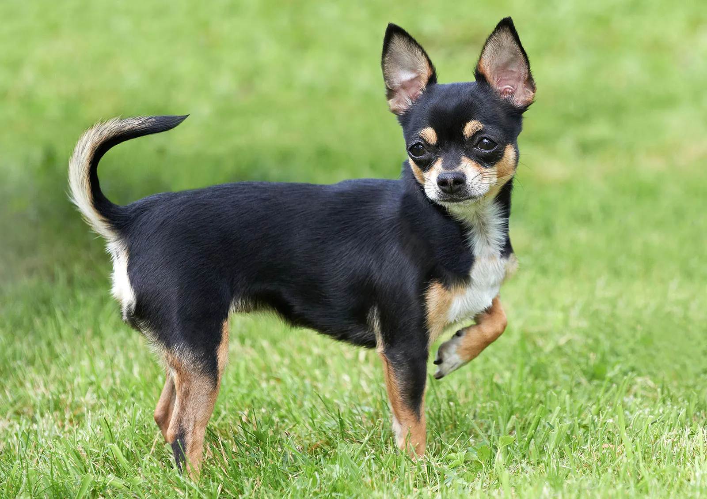

Wat is een Chihuahua?
Chihuahua’s zijn het kleinste hondenras dat door kennelclubs wordt erkend. Er zijn twee varianten, dat zijn de langhaar Chihuahua en de korthaar Chihuahua. In tegenstelling tot wat men vaak denkt is de langhaar erg vriendelijk voor uw huishouden.
Typische Chihuahua’s hebben een appelvormige kop, deze is afgerond, met dicht bij elkaar geplaatste ronde ogen en korte oren (driehoekig van vorm). De meeste oren van Chihuahua’s staan recht op, maar dat is niet altijd het geval.

Het uiterlijk van een Chihuahua
Wist u dat ras standaard Chihuahua’s geen lengte specificatie hebben? Dit is uitzonderlijk voor een hond, maar heel normaal voor de Chihuahua. Wel wordt er gekeken naar het gewicht van de hond.
Een Chihuahua varieert in hoogte tussen de 6 en 9 centimeter, hoewel sommige opgroeien tot 12 of 15 centimeter. Chihuahua’s van meer dan 2,7 kg wordt beschouwd als hoger dan de ras standaard.
Chihuahua’s zijn bedoelt als metgezellen en eigenlijk niet als showhonden. Ze kunnen groter en zwaarder zijn dan wat nodig is voor showhonden. Er is een langhaar Chihuahua en een korthaar Chihuahua, in het kort is de korthaar Chihuahua makkelijker te onderhouden dan de langhaar Chihuahua, maar de langhaar zal minder vacht verlies hebben. Over het algemeen heeft een Chihuahua weinig verzorging nodig.
Het is mogelijk om een Chihuahua in haast alle mogelijke varianten te vinden qua kleur. Ze zijn te vinden in de kleur wit, bruin, zwart of een combinatie hiervan.
Meer weten over het uiterlijk van de Chihuahua?
Het temperament van een Chihuahua
Het temperament van een Chihuahua hangt sterk van van de genetica van hun ouders en grootouders. Socialisatie heeft er uiteraard ook mee te maken. Er wordt gezegd dat Chihuahua’s zich erg makkelijk laten provoceren tot agressie en niet geschikt zijn voor een huis met kinderen. Dit hangt natuurlijk ook voor een groot deel af van de opvoeding en training van uw hond.
Als ras zijn ze heel loyaal aan één persoon in het gezin en ze kunnen erg beschermend zijn voor die persoon. Een Chihuahua kan over het algemeen goed overweg met andere Chihuahua’s, daarentegen werkt het minder goed met andere rassen. Natuurlijk helpt een goede socialisatie hierbij.
Een Chihuahua geeft de voorkeur aan een rustig huishouden en heeft de neiging om chagrijnig te worden in een stressvolle situatie. Daarom kunnen jonge kinderen makkelijker worden aangevallen als ze druk omgaan met een Chihuahua. Met tieners gaat dit weer iets beter, volwassen zijn perfect. Chihuahua’s zullen, net als kinderen en andere honden, het temperament van hun baasje aannemen.
De gezondheid van een Chihuahua
Wist u dat de Chihuahua het enige hondenras is dat is geboren met een incomplete schedel? Dit betekent dat het kleine appelkopje een zachte plek heeft. Het wordt een molera (open fontanel) genoemd en duurt ongeveer zes maanden om dit te sluiten en een volledig gevormde schedel te krijgen.
Omdat Chihuahua’s grote, uitpuilende oogbollen hebben, zijn ze vatbaar voor ooginfecties en verwondingen. Houd een oogje in het zeil op de uitpuilende ogen van je Chihuahua.
Honden van kleine rassen zoals de Chihuahua hebben kleine kaken die zorgen voor zwakkere tanden. Daarom hebben zij deskundige veterinaire aandacht nodig met betrekking tot hun tandheelkundig zorg. Een goede verzekering is daarom een absolute must.
Pas op voor hypoglykemie in uw puppy. Een lage bloedsuikerspiegel komt vaak voor. Houd een eenvoudig suikersupplement bij de hand voor het geval dat uw hond slaperig en ongecoördineerd tijdens het lopen.
Zorg dat uw hond fit en actief blijft, je wilt geen dikke hond. Obesitas kan leiden tot gerichtblessures, tracheale (luchtpijp) problemen, hartaandoeningen en bronchitis, wat allemaal leidt tot een kortere levensduur. Houd de traktaties tot een minimum en geef absoluut geen tafelresten. Ook hier een duidelijk opvoeding en goede regels erg van belang.
U zult merken dat Chihuahau’s snel schudden en rillen als ze gestressed, koud of opgewonden zijn. Een Chihuahua kan niet goed tegen de kou, zorg dan dus ook voor een goede warme omgeving. Een goed deken en een (ronde) hondenmand is voor ideaal (en eigenlijk heel erg nodig).
Een Chihuahua kan ongeveer 12 tot 20 jaar oud worden, kleine honden leven eenmaal langer dan de grotere honden.